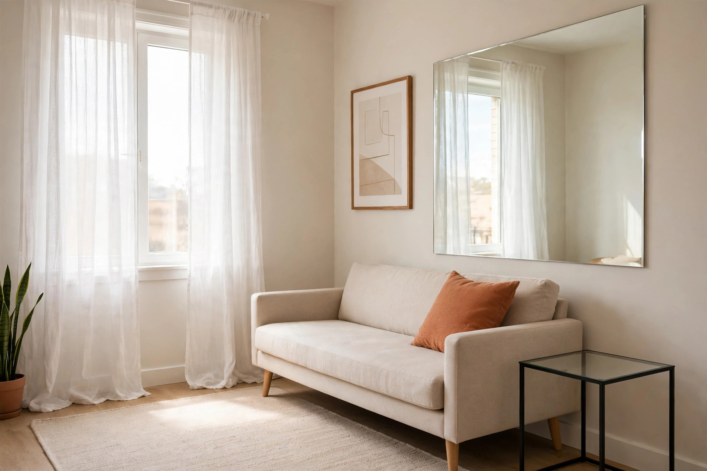
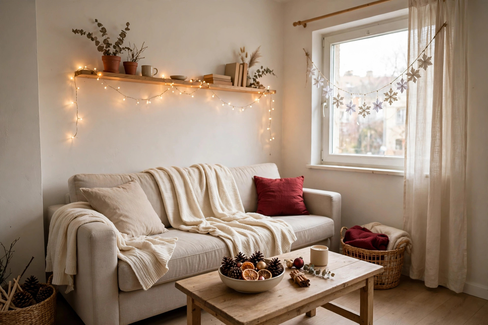
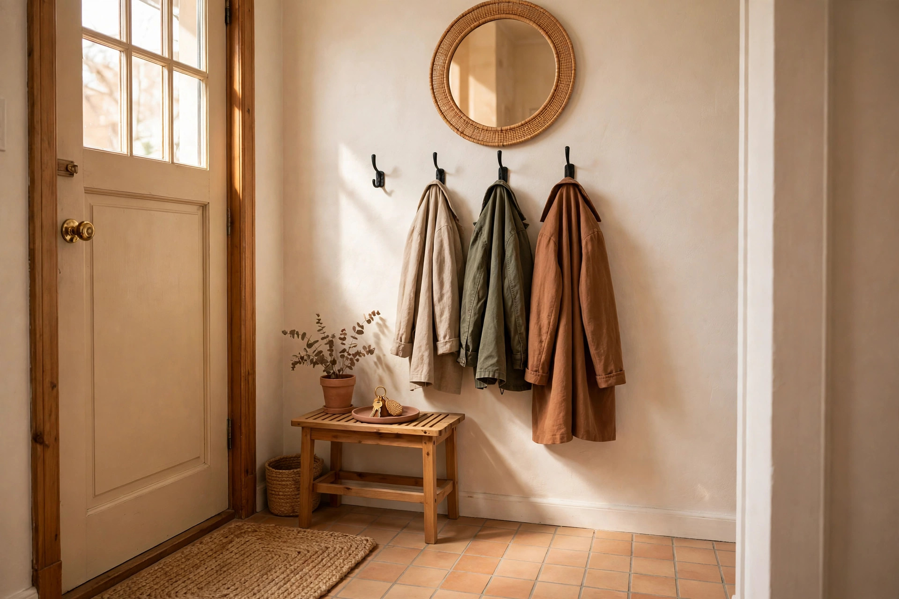
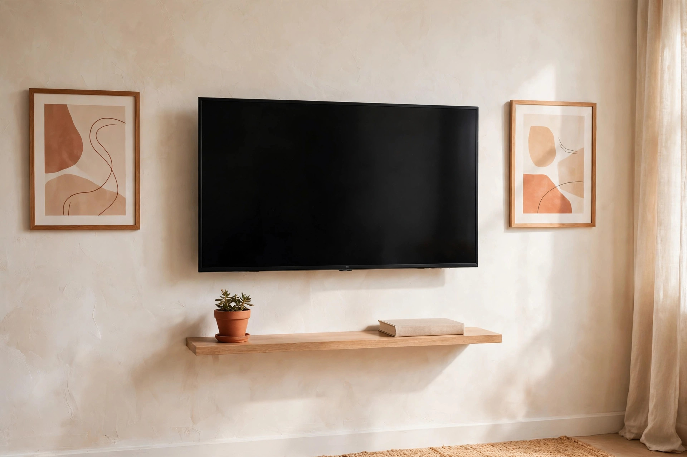
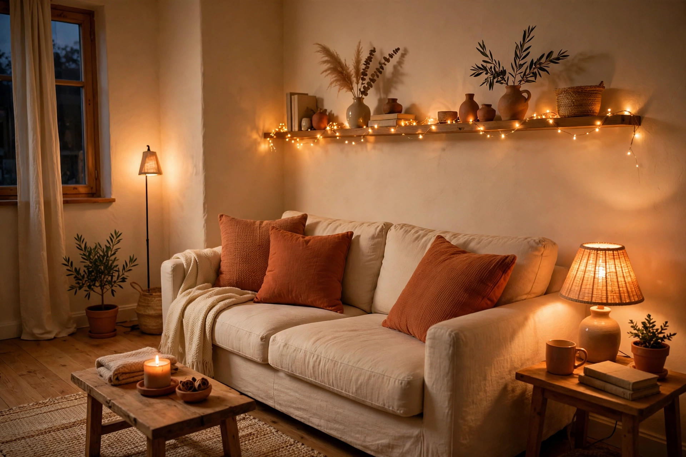
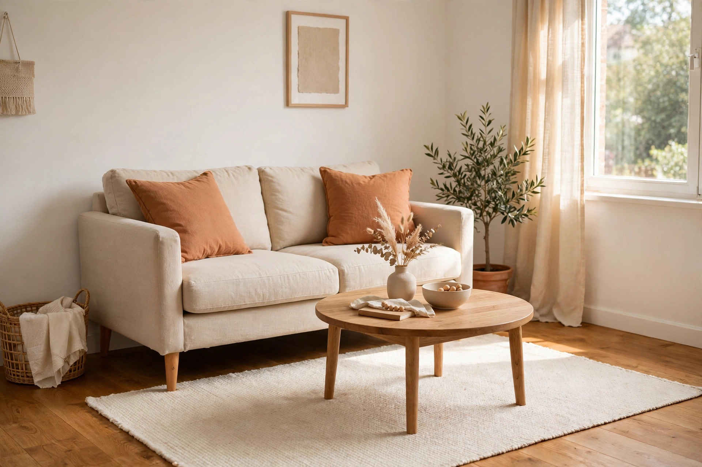
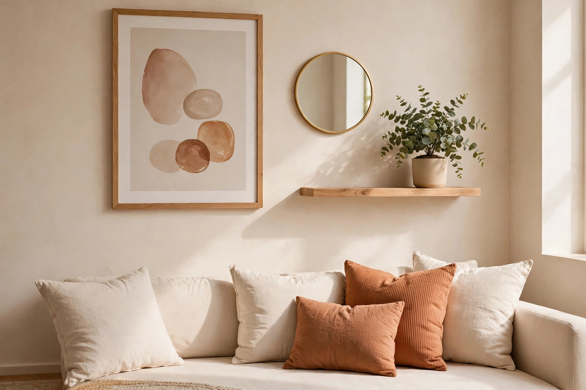

How to Make a Small Living Room Look Bigger: 15 Budget Tricks

15 tricks, mostly $0–$50 and renter-friendly. Start with curtains, a mirror, and 15 minutes of decluttering.
Small spaces, beautifully lived in — on a budget.
Phase 1 · Foundation · 22–30 Nov 2026
Start here: 15 budget tricks to make a small living room look bigger.

15 tricks, mostly $0–$50 and renter-friendly. Start with curtains, a mirror, and 15 minutes of decluttering.

15 storage ideas and a ~$87 starter kit — under $100, no drilling needed.

14 small tree ideas that fit any corner — tabletop, wall, and corner trees, mostly $0–$30.

14 ideas for a whole apartment under $50 — fairy lights, pinecones, and thrifted finds.

13 mantel ideas with no fireplace needed — a shelf, a garland, and warm lights, for about $20–$35.

14 cosy winter ideas — warm light, soft layers, and one throw, mostly $0–$35.

14 ideas for a party for 6–8 people — one table, fairy lights, and a 20-minute cleanup, about $40–$65.

14 room-by-room steps in 2 weeks — free, 20 minutes a day, with a maybe box for the hard decisions.

14 ideas for a small kitchen — shelf risers, clear jars, and a weekly fridge check, about $38–$58.

14 ideas for a fresh start — move one piece of furniture, wash the windows, add plants, from $0 to about $30 for the essentials.

12 layouts for a standard 10x12 room — sofa, TV and seating, with measurements that actually fit.

12 entryway ideas for flats with no hallway — hooks, a bench, a mirror and a mat, all under $30.

12 curtain tricks — hanging height, length, fabric and colour — that make small windows look bigger.

12 sofa picks and styles that fit small rooms — sizes, shapes and prices, all under $300.

12 TV wall ideas — mounting, hiding cables, shelves and art around the TV, all on a budget.

12 lighting ideas — lamps, fairy lights and layered light for dark small rooms, all under $40.

12 rug sizes and placements for small rooms, with a simple measuring guide that stops guesswork.

12 corner ideas — a reading chair, a plant, shelves or a small desk — for space that is doing nothing.

12 wall decor ideas — art, mirrors, shelves and frames that do not crowd the room, all under $25.

12 coffee table ideas — nesting, storage, lift-top and round tables for tight rooms.
Our starter guide to the six things that make a small room work: Space Planning · Colour · Light · Storage · Budget · Renter-Friendly.
Now on the site: winter cosiness, New Year party and declutter ideas, plus January kitchen organisation and a budget refresh for 2027.
Christmas in a small space is here: 14 small Christmas tree ideas that fit any corner — no big tree, no big spend: just the pieces that fit.